A extinção de espécies é resultado de múltiplos fatores
interconectados, desde ações humanas até mudanças ambientais de
larga escala.
Conheça as principais causas que colocam
milhares de espécies em risco.
Espécies em risco no Brasil
Perda de biodiversidade
Espécies extintas/dia
Ligadas ao uso da terra
Cada ecossistema brasileiro enfrenta desafios únicos. Reconhecer as particularidades da degradação em cada região é o primeiro passo para buscar soluções eficazes e preservar o equilíbrio da nossa fauna.
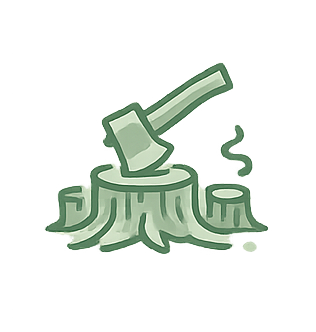
Principal vetor de perda de habitat
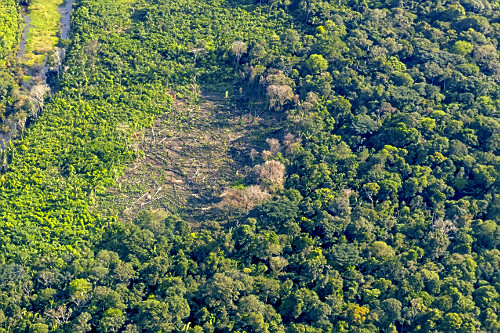
A remoção da vegetação nativa na Amazônia destrói o abrigo de milhares de espécies. Grande parte desse processo ocorre de forma ilegal para abrir espaço à exploração madeireira e à pecuária. Com a fragmentação da floresta, animais de grande porte perdem suas rotas de caça e reprodução, sendo forçados a migrar ou enfrentar a fome.
Contaminação letal por mercúrio
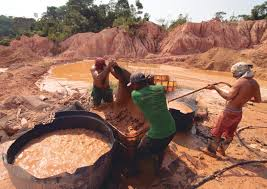
A extração de ouro provoca a contaminação direta dos rios amazônicos por substâncias tóxicas, como o mercúrio. Isso não apenas envenena os peixes e os botos, mas afeta toda a cadeia alimentar, chegando aos felinos e aves de rapina. Além disso, a instalação de maquinários devasta as margens dos rios, destruindo berçários naturais.
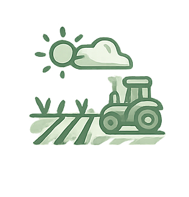
Motor de ~90% da supressão do bioma
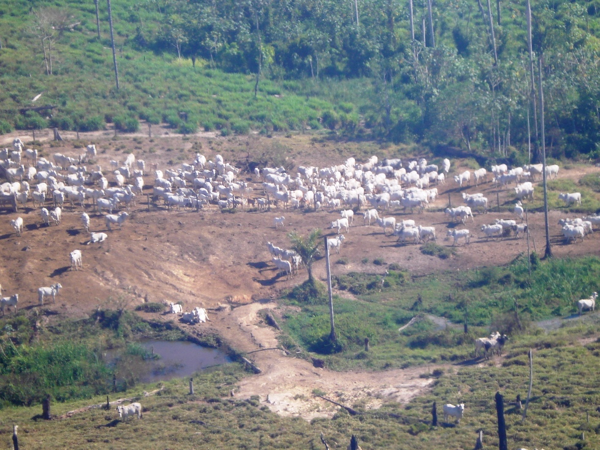
O Cerrado é o bioma que mais sofre com o avanço acelerado do agronegócio (soja e gado). À medida que a savana brasileira é convertida em monoculturas gigantescas, espécies como o Lobo-Guará e o Tamanduá-Bandeira ficam sem alimento. O uso intensivo de agrotóxicos também esteriliza o solo e contamina as nascentes d'água essenciais para a fauna.
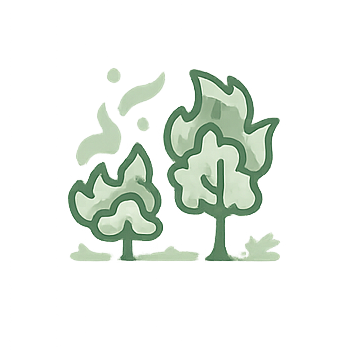
Frequência artificial e descontrolada
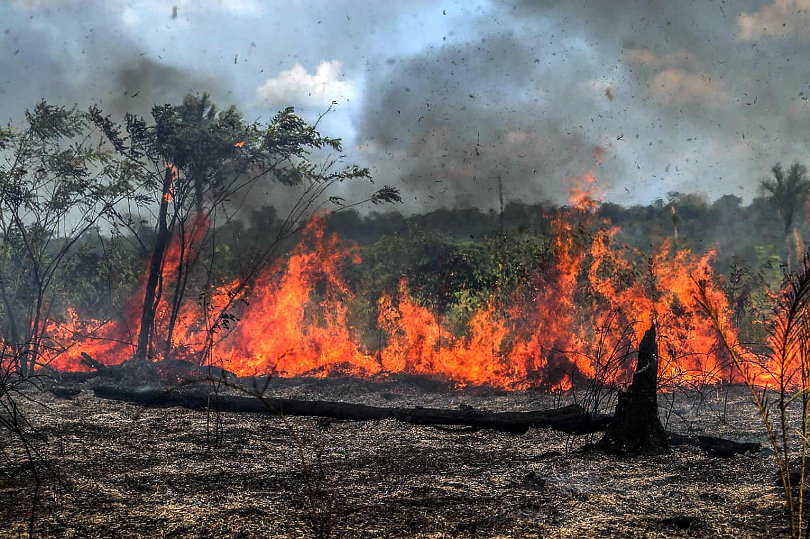
Embora o fogo faça parte do ciclo natural do Cerrado, a ação humana tornou os incêndios extremamente frequentes e devastadores. Usado para "limpar" áreas para pastagem na época de seca, o fogo foge do controle, carbonizando ninhos, filhotes e reduzindo a cinzas quilômetros de vegetação que levariam décadas para se recuperar.
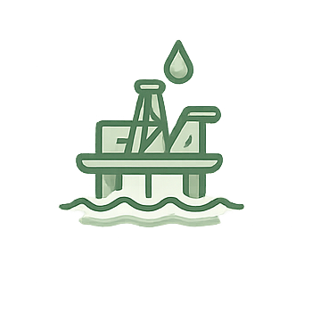
Apenas 12% da floresta original resta

A Mata Atlântica abriga mais de 70% da população brasileira. A especulação imobiliária, a construção de rodovias e a poluição de rios e oceanos espremeram a fauna local em pequenos "ilhas" de floresta. Animais como o Mico-Leão-Dourado sofrem com a falta de espaço, atropelamentos constantes e o descarte irregular de lixo e esgoto.
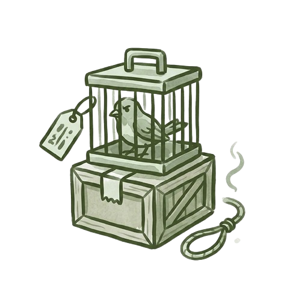
38 milhões de animais retirados/ano
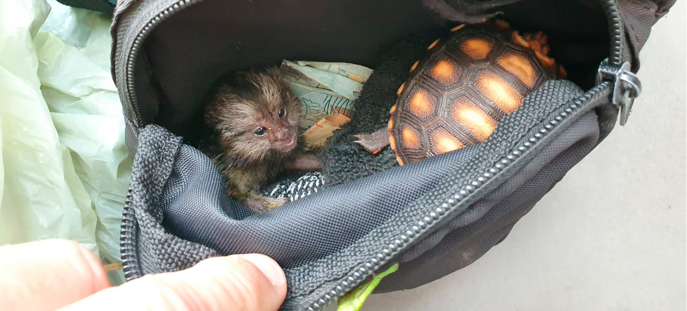
A proximidade com grandes centros urbanos e portos facilita a captura e a rota de contrabando de animais na Mata Atlântica e no Nordeste. Aves coloridas, anfíbios raros e primatas são capturados para o mercado clandestino de animais de estimação. Essa prática gera um desfalque genético irreparável nas populações selvagens.
Potencializa 100% dos riscos
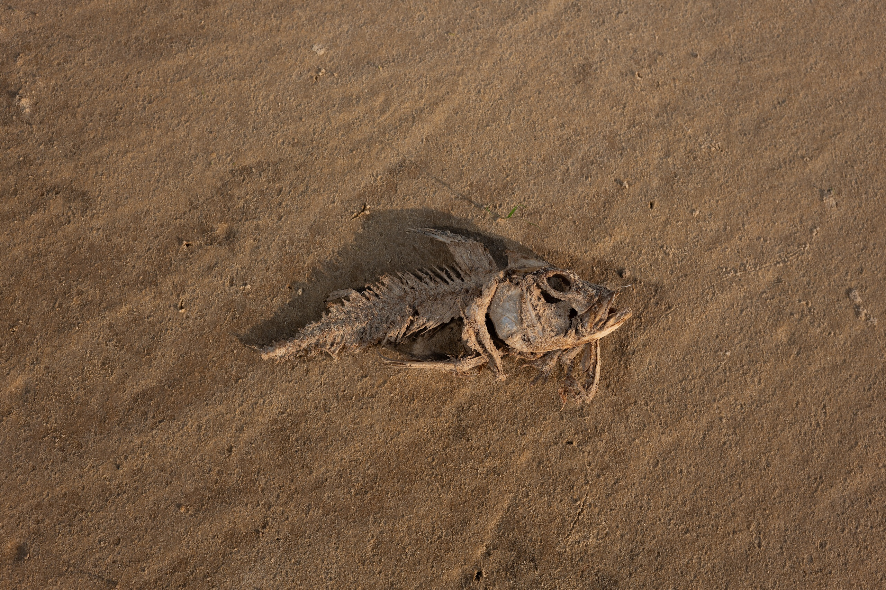
O aquecimento global atua como um acelerador de todas as ameaças acima. Alterações nos padrões de chuva causam secas severas na Amazônia, desertificação no Nordeste e enchentes no Sul. O aumento da temperatura dos oceanos destrói recifes de corais, colocando em cheque o futuro da biodiversidade brasileira e global.